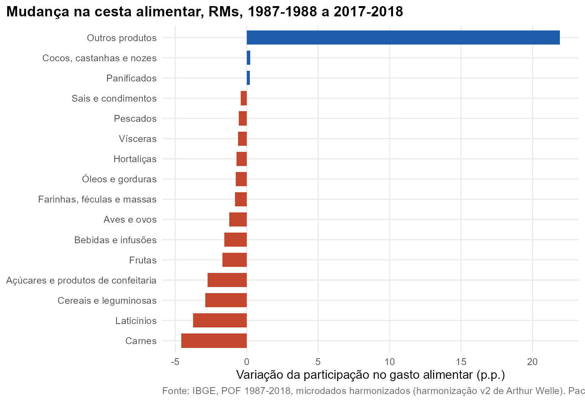

Pergunta. O que mudou na cesta alimentar das famílias, e como ela difere entre níveis de consumo?
Método. Participação de cada uma das 16 categorias de alimentos (Nível 1) no gasto alimentar total, mais a folha “16104 Refeição”. Conjunto das RMs nas cinco edições; quintis de consumo per capita no Brasil em 2017-2018.
Refeições prontas tomam o lugar dos ingredientes
A folha “Refeição” (marmita, almoço ou jantar fora, lanches) passa de 9,1% do gasto alimentar em 1987-1988 para 31,4% em 2017-2018. Ela explica quase toda a alta de “Outros produtos” (de 18,9% para 40,8%). Em 2017-2018 a harmonização v2 inclui aqui o quadro 24 do questionário, de alimentação fora do domicílio, que ficava sem categoria no código antigo.
As maiores quedas são de carnes (-4,6 p.p.), laticínios (-3,7 p.p.), cereais e leguminosas (-2,9 p.p.) e açúcares (-2,7 p.p.).

A cesta por quintil, 2017-2018
Refeições respondem por 13,7% do gasto alimentar no 1º quintil e 33,0% no 5º. Panificados (12,6% contra 5,8%), aves e ovos (11,1% contra 3,6%) e cereais e leguminosas (7,0% contra 2,2%) pesam mais na base.
| Categoria | 1º quintil | 2º quintil | 3º quintil | 4º quintil | 5º quintil |
|---|---|---|---|---|---|
| Aves e ovos | 11,1 | 8,4 | 6,6 | 5,3 | 3,6 |
| Açúcares e produtos de confeitaria | 2,6 | 2,8 | 3,2 | 3,4 | 3,4 |
| Bebidas e infusões | 7,5 | 8,0 | 9,0 | 10,0 | 10,1 |
| Carnes | 15,5 | 15,1 | 14,4 | 13,4 | 10,5 |
| Cereais e leguminosas | 7,0 | 5,6 | 4,6 | 3,7 | 2,2 |
| Cocos, castanhas e nozes | 0,9 | 0,6 | 0,5 | 0,4 | 0,4 |
| Farinhas, féculas e massas | 3,9 | 3,2 | 2,9 | 2,6 | 1,9 |
| Frutas | 3,0 | 3,6 | 3,6 | 3,8 | 3,8 |
| Hortaliças | 4,5 | 4,7 | 4,4 | 4,4 | 3,8 |
| Laticínios | 6,6 | 7,0 | 7,2 | 7,7 | 7,2 |
| Outros produtos | 18,3 | 24,8 | 30,0 | 32,9 | 43,1 |
| Panificados | 12,6 | 10,3 | 8,5 | 7,5 | 5,8 |
| Pescados | 3,1 | 2,4 | 1,7 | 1,5 | 1,2 |
| Refeição | 13,7 | 18,3 | 21,3 | 23,6 | 33,0 |
| Sais e condimentos | 0,9 | 1,1 | 1,3 | 1,4 | 1,3 |
| Vísceras | 0,5 | 0,5 | 0,5 | 0,3 | 0,2 |
| Óleos e gorduras | 1,9 | 1,8 | 1,8 | 1,8 | 1,3 |
Reproduzir
pof_participacao(bs, c(sprintf("n%02d", 1:16), "f16104"), den = "Alimentação", filtro = quote(!is.na(RGMT)))
# ou, com a camada de pesquisa:
dados <- pof_carregar(dir = dir, itens = list(refeicao = "16104"))
plot(pof_analisar(dados, "refeicao", medida = "participacao", por = "quintil"))